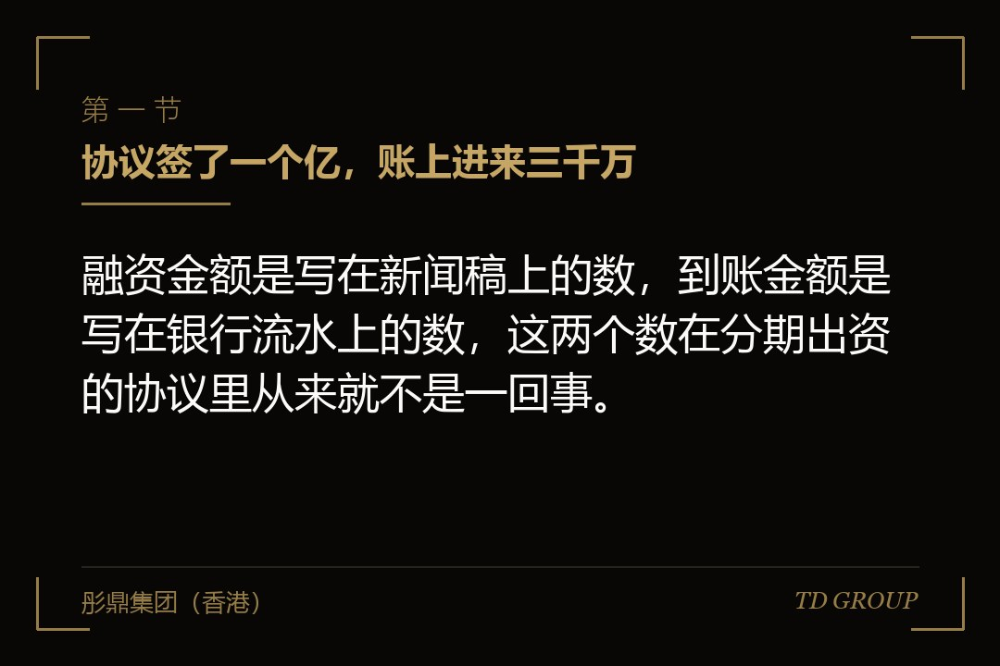
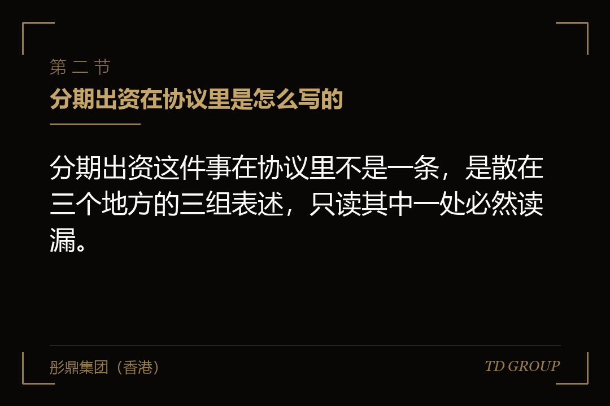
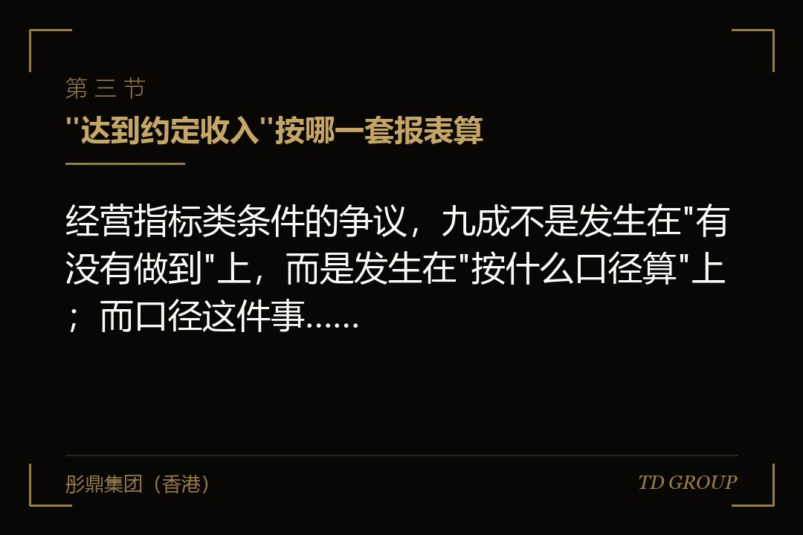

一、协议签了一个亿，账上进来三千万

结论先行：融资金额是写在新闻稿上的数，到账金额是写在银行流水上的数，这两个数在分期出资的协议里从来就不是一回事。一家做骨科植入耗材的企业，去年谈完一轮融资，投资协议上写的本轮出资总额是一个亿。创始人在内部会上宣布的时候用的也是这个数，随后按这个数排了产线扩建、临床注册推进和销售团队扩编的计划。交割那个月，账上进来的是三千万。
剩下的七千万写在协议的另外一条里：第二期两千万，在标的公司的某型号产品取得注册许可之后的三十个工作日内缴付；第三期两千万，在标的公司当年度经审计的营业收入达到约定金额之后的三十个工作日内缴付；第四期三千万，在标的公司在约定期限内完成下一轮融资、且新投资方的投前估值不低于本轮投后估值之后缴付。三条，一条比一条远。
创始人当时不觉得这有什么问题，他的说法是，这些事本来就是我们要做的，做到了钱就来。这个逻辑听上去很正当，问题出在它默认了一件事——"做到没做到"是客观事实，双方看到的会是同一个答案。
实际发生的是：那型号产品的注册许可因为一份补正资料，比原计划晚了七个多月；当年度的营业收入按公司自己的管理报表算是达到了，按后来出具的审计报表算差了一千一百万，差额来自两笔跨期确认的经销商收入和一笔关联方交易的抵销；至于下一轮融资，行业当时的定价环境已经不支持"不低于本轮投后估值"这个前提了。
于是这家公司的处境变成了：股权按一个亿的口径已经在工商登记完成，投资方的持股比例是按总额算的；产线按一个亿的计划开了工，设备预付款付了出去；人按一个亿的计划招了进来；而账上真实到过的钱是三千万，加上第二期迟到七个月才进来的两千万。中间那七个月，公司靠创始人个人借款和延长供应商账期撑过去，最紧张的时候设备尾款拖了四个月，对方停了后续的调试服务。
这篇文章要讲的就是这几行字：分期出资的条件通常怎么写、写成什么样是可执行的、写成什么样是将来的争议、条件没达成的那天企业站在什么位置上、以及签字之前能争取到什么。
有几件相邻的事此处不展开：业绩承诺与回购触发是另一个独立话题，它处理的是"事后怎么退"，本文只讲"钱什么时候到"；从条款清单走到交割的那一段流程、钱到账之后怎么用与用途受什么约束、以及账上的钱还能撑多久这类节奏判断，都各自是独立的话题，本文只在它们与出资节奏交叉的地方带一句。
二、分期出资在协议里是怎么写的

结论先行：分期出资这件事在协议里不是一条，是散在三个地方的三组表述，只读其中一处必然读漏。
其一是出资安排本身，通常在增资协议或者股权购买协议的价款支付条款里，写明本轮出资总额、分几期、每期金额、每期的缴付时点或者缴付前置条件。这一条决定的是钱的节奏。
其二是每一期的触发条件，有的直接写在支付条款下面，有的单独列一个附件，叫"里程碑"或者"业绩条件"或者干脆叫"后续出资的先决条件"。名字不重要，这一条决定的是钱到底来不来。
其三是股权的登记与权利安排，通常在交割条款和公司章程修订里，写明各期出资对应的股权在什么时候办理工商变更登记、在钱没有全部到位之前投资方享有哪些股东权利。这一条决定的是钱没来的时候你手上还剩什么。
这三处经常不一致。见过的一种典型情形是：支付条款写得很细，四期金额精确到万位；触发条件那一页只有一句"标的公司当年度经营业绩达到双方认可的水平"；而股权登记那一条写的是本轮全部股权在交割日一次性办理变更登记。三条放一起看，这份协议的实际效果是：股权当天全给，钱按四次给，后面三次给不给由一句没有口径的话决定。
触发条件的写法，实务中大致落在五组里。
其一是经营指标类。 收入、毛利、出货量、付费客户数、装机量、月度活跃数——挑一个或者几个，设一个门槛值和一个考核期间。这一组用得最多，也是争议最多的，原因在下一节。
其二是资质与认证类。 取得某项行业许可、通过某项体系认证、拿到某个准入编号、完成某项备案。这一组的好处是判定客观，有没有那张证是一眼能看到的事实；坏处是时间完全不在企业手里。一家做商用厨房设备的企业，把第二期的条件设成"取得某目标出口市场的产品准入认证"，认证机构那一年的排期比往年长了将近一倍，企业该做的事一件没少做，条件就是不到——而它在签协议的时候，按往年的排期给自己留了四个月的余量。
其三是客户与订单类。 与某一类客户签署框架协议、在手订单金额达到某个数、单一客户的年度采购额达到某个数、进入某个体系的合格供应商名录。这一组的问题是它把企业的钱挂在了一个第三方的决策上，而那个第三方与这笔融资毫无关系，也不欠企业什么。
其四是股东与轮次类。 在约定期限内完成下一轮融资、下一轮的规模不低于某个数、下一轮的估值不低于某个数、引入某一类型的新股东。这一组在市场定价环境变化的时候最脆弱——企业做得再好，也决定不了别人愿意按什么价格进来。
其五是审计与合规类。 出具无保留意见的审计报告、完成某项历史沿革的整改、把某几项对外事项处理干净、社保公积金补缴到位。这一组通常是把尽调里发现的问题接到出资节奏上，本身是合理的，需要注意的只是整改的完成标准由谁认定。
这五组可以叠加，也经常叠加。叠加的时候要看清楚它们之间是"且"还是"或"——一份协议里写着第三期条件为"当年度收入达到约定金额，并完成合格的下一轮融资"，那就是两个条件同时成立才付，两件事各自的达成概率相乘之后，那笔钱到账的可能性比创始人心里估的低得多。
这里要把一件常被混在一起的事分清楚：分期出资不是业绩承诺，也不是回购。
分期出资决定的是钱什么时候到——条件不达成，投资方不付后面那笔，双方就此打住；业绩承诺与回购决定的是股权和已经到手的钱事后怎么退——条件不达成，投资方有权要求把已经付出去的钱按约定方式收回来。 一个是"不给你"，一个是"还给我"，方向正好相反。
这两套安排可以同时写进一份协议，而且经常同时存在，但它们是两条独立的线，谈判时要分开谈、分开算。业绩承诺与回购触发本身是另一个独立话题，此处不展开。
三、"达到约定收入"按哪一套报表算

结论先行：经营指标类条件的争议，九成不是发生在"有没有做到"上，而是发生在"按什么口径算"上；而口径这件事，签字之前写一句话就能解决，签字之后要花几个月。
一家做新能源汽车热管理部件的企业，第三期出资的条件写的是"标的公司当年度营业收入不低于三亿元"。到了年底，公司自己的管理报表上是三亿一千万，创始人给投资方发了封邮件，附上报表，说条件达成了，请安排付款。
对方回了三个问题：其一，这三亿一千万里，有多少是发给经销商但尚未终端销售的；其二，其中与关联方的交易金额是多少，抵销之后是多少；其三，这个数是管理口径还是将来审计报告上的数，如果两者不一致以哪个为准。
这三个问题一个都不刁钻，是任何一个财务人员都会问的问题。麻烦在于协议里一个字都没写。于是双方开始谈：企业方主张按管理报表，理由是签协议的时候大家看的就是管理报表；投资方主张按审计报表，理由是审计报表才可核验。
谈了两个多月没谈拢，最后各让一步，按审计报表算，但把两笔有争议的经销商收入单独提出来找会计师出专项说明。等这一套走完，钱到账已经是次年四月，而这笔钱原本是要付给一家设备厂的定金，那条产线的交付档期已经排到了更晚。
这件事里企业方损失的不是那笔钱，是七个月的时间和一次产线交付窗口。而它本可以在签字那一天用一段话避免掉：写明按经审计的合并报表的营业收入科目计算，写明关联方交易是否计入以及按什么规则抵销，写明如果审计报告出具时间晚于判定时点该怎么处理，写明双方对数字有异议时由哪一家会计师事务所出具专项意见并且以该意见为准。
同类的口径陷阱还有几个，都值得在签字前逐条问一遍：
期间怎么定。 "当年度"是自然年还是协议约定的十二个月？跨年的项目收入按什么时点确认？如果考核期间与公司的会计年度不一致，那半年的数从哪来。
指标本身怎么定。 写"收入"的时候，是含税还是不含税、是合并口径还是母公司口径、是否剔除非经常性项目。写"毛利"的时候，成本里含不含制造费用与运费。写"出货量"的时候，退货怎么算。写"付费客户数"的时候，同一个集团下的多个采购主体算几个，试用转付费的算不算，当年流失的扣不扣。
数据从哪来。 由公司提供，还是由投资方委派人员核查，还是由第三方出具。公司提供的，投资方有没有复核权、复核到什么颗粒度、复核期限多长。
不可抗与政策变化怎么处理。 资质类条件遇到审批排期变化、行业标准修订、目标市场准入政策调整，是顺延还是视为未达成。这一条在资质与认证类条件下几乎是必写的，因为那一组条件的时间本来就不在企业手里。
写清楚这些不需要更强的谈判地位，只需要在谈判还没结束的时候提出来。等到判定时点已经到了、双方各自算出了一个数，那时候提的每一句话都会被对方理解成为了拿钱而找的说法。华尔街彤鼎俱乐部内部整理过一份关于经营指标口径的对照清单，供成员在条款谈判阶段逐条核对。
四、股权先登记了，钱没到：两种登记方式，两种处境
结论先行：分期出资真正的风险敞口，不在钱那一侧，在股权登记与出资节奏是不是对齐这一侧；这两者一旦脱节，企业就处在"股权已经给出去、钱还在别人口袋里"的位置上。
实务里大致有两种做法。
一种是股权在交割时按出资总额一次性办理变更登记，后续各期出资到账后不再另行变更。 这种做法对投资方友好，操作也省事，很多协议默认就这么写。
它带来的后果是：从交割那天起，投资方就是持有全部本轮股权比例的股东，享有相应的表决权、分红权、优先权，而它实际交付的可能只是总额的三成。如果后续期款一分不来，这家公司的结果是：让出了按一个亿计算的股权，拿到了三千万。这时候企业方能主张的通常只有违约责任，而违约责任要走的路和拿回股权是两码事。
一家做特种纸包装的企业遇到过这个局面。它的协议是一次性登记，后续两期挂在一个客户订单条件上，那个客户当年调整了采购策略，条件没达成，投资方按协议不再出资，也不同意调减持股比例，理由是协议里确实没有这一条。
这家公司后来在下一轮融资的时候被新的投资方反复追问股东名册与实缴情况的差异，谈判周期比预想的长了很多——因为对新进来的人来说，这张股东名册上有一个"已经登记了但没有实际投够"的股东，意味着一段需要先处理干净的历史。
另一种是各期出资分别办理变更登记，缴付一期登记一期。 这种做法对企业方友好得多：钱到多少，股权给多少，条件没达成、后续不出资的，股权自然就停在已缴付对应的比例上，不需要再去主张什么。它的代价是每一期都要走一次工商流程，公司章程和股东名册要改几次，如果中间还有其他事项要办理，节奏会更繁琐；另外有些投资方不接受这种安排，理由也很直接——它们要在交割时就锁定完整的股东权利。
介于两者之间的做法也有：股权一次性登记，但在协议与章程里写明，若后续某期出资未按约定缴付，投资方的持股比例按实际缴付金额相应调减，并配套一个可执行的调减程序（决议、章程修订、登记办理各由谁配合、期限多长、不配合怎么办）。这个安排在谈判上比分期登记容易被接受，前提是那个程序必须写到能落地——只写一句"届时双方另行协商"，等于没写。
无论采用哪一种，有两件事在签字前必须问清楚：在钱没有全部到位的期间，投资方享有的股东权利是全部还是按实缴比例享有； 以及如果后续期款未到，公司需要引入其他资金来源时，这位股东的优先权、反稀释安排是不是照常适用。 见过一种很难受的组合：钱没来，而协议里那些为保护投资方设计的优先权照常生效，企业既拿不到后面的钱，又因为这些权利的存在很难快速引入替代资金。
五、后续期款不到账那天，企业站在什么位置上
结论先行：条件没达成那一刻，企业损失的往往不是那笔钱本身，而是它已经按那笔钱做出去的一整套动作，而那些动作大多是不可逆的。
一家做工业机器人系统集成的企业，把第二期的条件挂在了"标的公司在约定期限内引入不少于一家新的机构投资方"上。签字的时候创始人觉得这条最容易——当时有三家在谈。
半年后，行业的定价环境变了，三家里两家暂停，剩下一家把估值压到了本轮之下，而协议里写着新投资方的投前估值不低于本轮投后估值。企业方陷入一个很拧巴的选择：接受那家的报价，条件里的估值门槛过不去，第二期照样不来；不接受，第二期同样不来。
这条件表面上是给企业设的目标，实际上把这笔钱的决定权交给了一个与协议无关的第三方，而那个第三方的判断只跟当期市场有关，跟企业做得好不好关系有限。
那家做商用厨房设备的企业，卡在认证排期上，处境又不一样。它的问题不是做不到，是做到的时间比条件里写的晚。而它在签字后已经按第二期会到账的假设，与一家海外经销商签了年度供货框架，备了货，租了海外仓的仓位。
认证晚了五个月，这五个月里备的货占着资金、仓位交着租金、经销商那边的年度指标完不成开始要求赔偿。等认证下来、第二期的钱进来的时候，这笔钱的一大半直接用于填这五个月里挖出来的坑，原本要做的产能扩建一分钱没投。
这两个例子指向同一件事：分期出资条款真正的成本，不发生在钱没到的那一天，而发生在企业按"钱会到"来安排经营的那几个月里。 创始人自查的时候可以逐条对：
- 已经签出去的采购合同与设备定金，对方按合同排产，取消要付违约成本；
- 已经招进来的人，尤其是按扩张计划招的销售与研发团队，人在薪资在；
- 已经承诺给供应商的付款节奏，一旦延后，账期和价格会一起变差，而且这件事在圈子里传得很快；
- 已经对下游客户做出的交付承诺，交不出来影响的不是这一单，是明年的合作资格；
- 已经启动的资质、注册、认证类投入，中途停下来往往等于前面的钱白花。
需要说清楚的是，这些结果不能都归到投资方头上。投资方按协议行事，条件没成就不付，这是协议本来就写着的。真正的问题出在企业方在签字那一刻，把一份有条件的承诺当成了确定的资金，并且据此做了一整套不可逆的安排。
六、企业方该在签字之前争取的四样东西
结论先行：分期出资本身不是坏条款——投资方分批投入是合理的风险管理，企业方分批拿钱有时候也更符合自身节奏；真正要争的不是取消分期，而是把每一期的判定过程变成一件可预期的事。
其一，条件必须客观可验证。 判据很简单：把这个条件交给一个不认识双方的人，他能不能只看文件就得出一个确定的答案，而且换个人来算还是同一个答案。
"当年度经审计合并报表的营业收入不低于三亿元，其中关联方交易按约定规则抵销"，可以；"经营业绩达到双方认可的水平""公司发展符合预期""完成主要战略目标"，不可以。凡是需要"认可""满意""符合预期"的条件，实质上都是把决定权单方面交出去了。
同理，尽量避免把条件挂在完全不受企业控制的第三方决策上；如果商业上必须挂，就要配一个时间顺延或者替代条件的安排。
其二，必须有明确的判定人与判定时点。 谁来算、什么时候算、算完之后多少天内答复、答复形式是什么、逾期不答复视为什么。这四件事缺一件，企业就可能陷入无限期等待——条件明明达成了，对方不确认，协议里又没写不确认怎么办。判定时点尤其重要：写"当年度收入达标后付款"，如果审计报告要到次年五月才出，那么这笔钱实际上是次年五月的钱，而企业在做资金计划时很可能按当年十二月排的。
其三，必须有争议解决机制，而且要写得比一般条款更具体。 数字有争议时找谁出专项意见、这个意见是不是终局、费用谁承担、意见出具之前双方各自能做什么不能做什么。把"届时协商"写成"由甲乙双方共同认可的会计师事务所出具专项报告，双方以该报告结论为准，费用由主张方先行垫付、按结论承担"，这两句话的差别，在真出争议的时候是几个月。
其四，也是最容易被漏掉的一条：条件未达成时的处理方式，应当是后续出资终止或者相应调减对应的股权比例，而不是把它接到一条回购义务上去。 这两者的区别是根本性的：前者的后果是"这笔钱不来了，双方按已经实际投入的部分把股权关系理顺"，公司少了一笔资金但资产负债表是干净的；后者的后果是"这笔钱不来了，而且已经到手的那部分变成了一笔要还的债"，公司在最缺钱的时候多出一项负债。
谈判时要特别留意条款之间的钩连——有些协议在分期条款里写得很温和，但在另一处的保护条款里，把"未能完成后续出资的先决条件"也列进了触发情形。看条款不能只看那一节，要顺着定义把引用关系拉一遍。
一家做精细化工助剂的企业在这四条上做了完整的准备，可以作为正面参照。
它的第二期条件原本写的是"当年度经营情况良好且完成产能扩建"，最后改成了三句可核验的表述：某条产线通过验收并出具验收报告、当年度经审计的该产品线收入不低于约定金额（关联方交易的抵销规则单列一句）、以及安全与环保方面无被处以罚款以上行政处罚的记录。
判定人写明由双方共同认可的会计师事务所与公司聘请的验收机构分别出具意见，判定时点写明为审计报告出具后十五个工作日内，投资方需在收到全部文件后十个工作日内书面答复，逾期未答复视为无异议。
条件未达成的处理写的是投资方有权不缴付该期出资，并按实际缴付金额相应调减持股比例，配套的决议与登记程序写进了协议附件。后来那条产线的验收比计划晚了两个月，双方按协议顺延判定时点，第二期在顺延后的时点到账，全程没有产生一次争议。
在这四条上寸土必争通常不会伤害交易本身。 认真的投资方不会因为企业要求把条件写清楚而退出，它自己也不希望将来为一个数字跟被投企业耗几个月。
七、把没到账的钱写进预算，以及签字之前该写死的三件事
结论先行：分期出资协议里最贵的那个错误，不在协议里，在协议签完之后企业自己做的那张预算表上。
一家做农业机械的企业，本轮总额六千万，首期两千万，后面两期各两千万挂在两个经营指标上。创始人在做次年预算的时候，把六千万整体计入了可用资金，据此定了三件事：新建一条装配线，设备款分三次付；把销售人员从三十人扩到七十五人；给两个区域的经销商提高授信额度以换取更高的年度采购承诺。这三件事在假设资金充足的前提下都是对的决定。
到了年中，头一个指标因为一个主力机型的排产延误没达成——差得不多，但条件写的是硬数字，没有缓冲区间。第二期两千万不来。
此时装配线的设备已经到了两批、付了两次款，第三次款项的付款期限就在两个月后；新招的四十五个人已经在岗五个月；经销商的授信额度已经放出去，收回来要谈。
这家公司当年做的动作是：设备第三批延期交付并承担了一笔违约金、销售团队裁掉一半、经销商授信收缩导致次年两个区域的采购承诺重新谈判。全年下来，这笔本来用于扩张的融资，实际效果是让公司经历了一次扩张再收缩的完整周期，而收缩那一半的成本比不扩张要高。
正确的做法在做预算的那一刻就能定下来，而且不需要任何谈判：把分期出资的每一期，按它自己的性质分别对待。 已经到账的那部分，是资金；条件在企业自己手里、判定口径清晰、时点明确的那部分，可以作为有把握的预期，但要为判定与打款流程留出足够的时间余量；条件挂在第三方决策上或者挂在下一轮融资上的那部分，在到账之前不进任何刚性支出的预算——不用于设备定金、不用于人员编制、不用于对外的付款承诺。
这不是保守，这是把资金的确定性差异如实反映在计划里。同一笔钱，写在协议上和到了账上，对企业的意义完全不同。
再往前一步的做法是给每一期做一次"不到账推演"：假设这一期不来，公司在哪个月会出现资金缺口、缺口多大、届时有哪几条可选路径、每条路径需要提前多久启动。把这个推演做完，创始人对每一期条件的重视程度会立刻变得不一样——因为他会看到，有些条件表面上是"锦上添花"，实际上公司的资金计划已经离不开它了。
回到开头那家骨科植入耗材企业。它后来在下一轮融资的时候，把分期条款重写了一遍：出资分两期而不是四期，第二期的条件只保留了一条经营指标并写清了口径、判定人与判定时点，取消了与下一轮估值挂钩的那条，同时把股权登记改成了分期办理。
这份协议的总金额比上一轮那份小，但它的每一个数字都是可以拿来做计划的数字。创始人后来的说法是，上一份协议给了他一个很大的数和一年多的被动，这一份给了他一个小一点的数和一份能排进日程表的时间表。
签字之前，把这三件事写死，其余的都可以再谈：
什么算达成。 指标的口径、期间、计算规则、抵销与剔除的处理，写到一个第三方只看文件就能算出同一个答案的程度。
谁说了算。 判定人、判定时点、答复期限、逾期未答复的后果、有争议时由谁出终局意见、费用怎么承担。
达不成怎么办。 后续出资终止或者按实缴金额调减股权比例，配套的决议与登记程序写进附件；并且顺着定义拉一遍引用关系，确认"条件未达成"没有被别处的条款接到回购或者其他清算安排上去。
这三件事都是条款，不是运气。它们在签字之前是可以逐字商量的文字，在签字之后就是既成事实——分期出资这件工具本身没有立场，它的全部风险与全部保护，都在那几行字的写法里。彤鼎集团（香港）有限公司在协助企业做条款梳理时，通常会把这三件事单独列成一页，让创始人在正式签署之前逐条确认一次。
以上为市场经验性表述，具体条款设计需结合交易背景、行业特性与双方谈判地位，并以最终签署的协议文本为准。